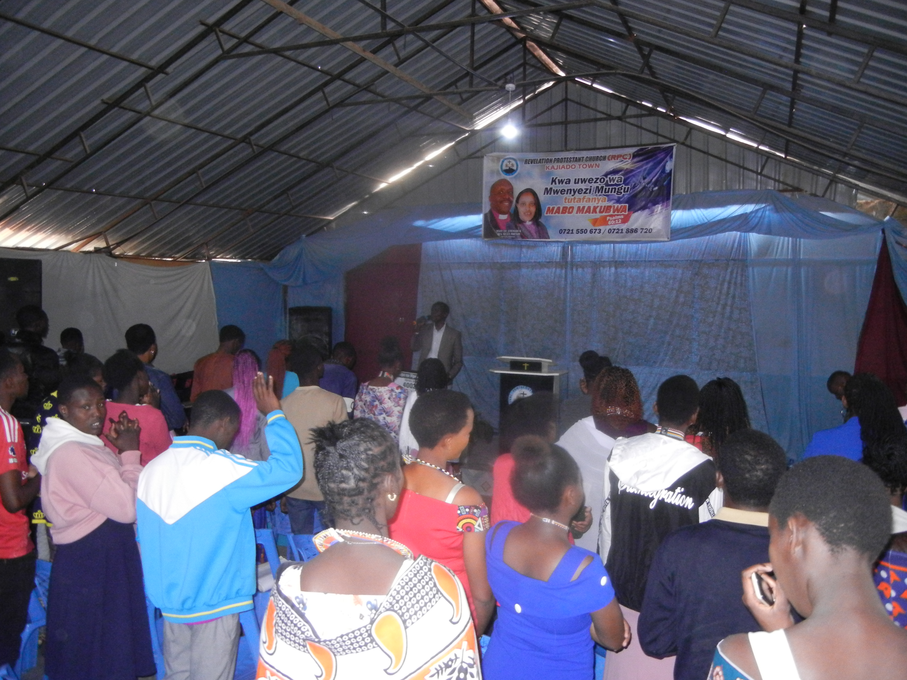
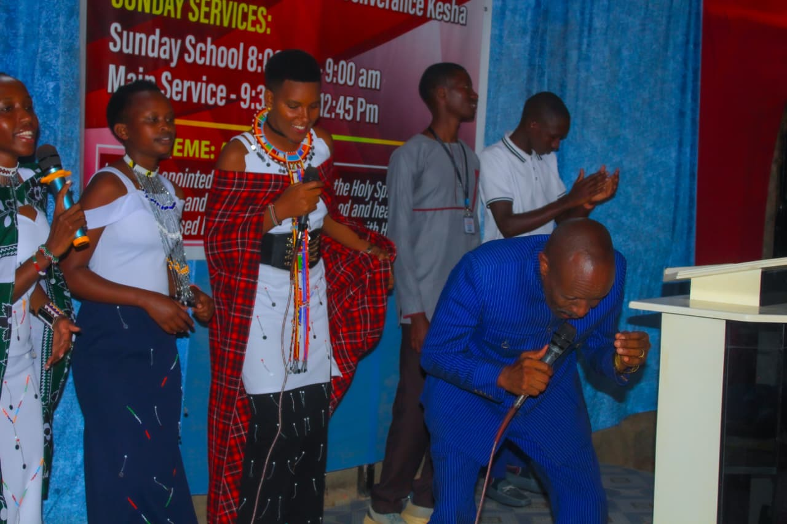
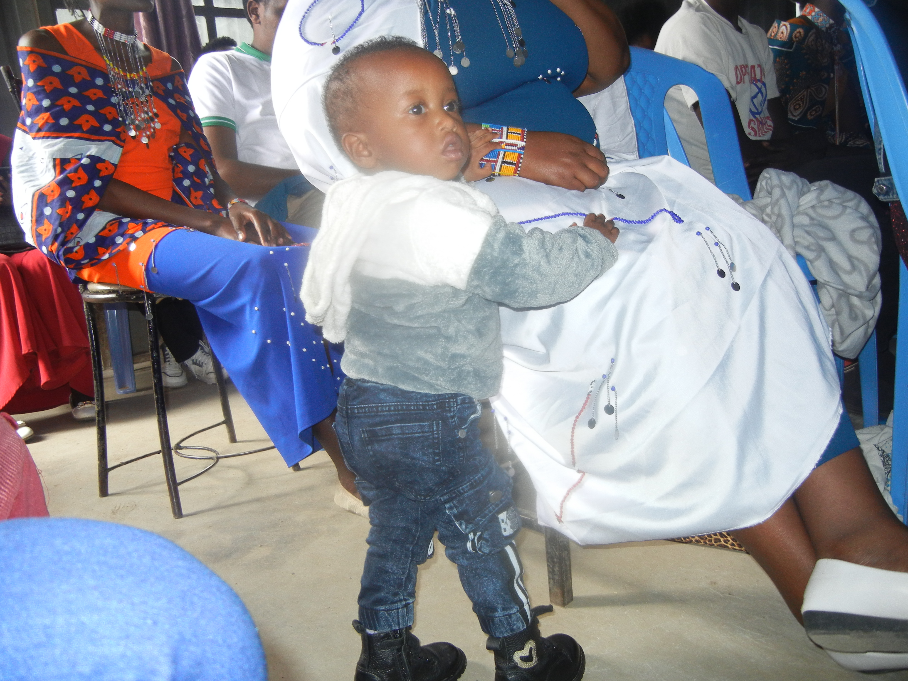

Revelation Protestant Church
RPC • Kajiado
A place of worship, prayer, fellowship and spiritual growth.
📍 Kajiado Central, along Juacali Road
A place of worship, prayer, fellowship and spiritual growth.
📍 Kajiado Central, along Juacali Road
Welcome to RPC
Revelation Protestant Church (RPC) is located in Kajiado Central, along Juacali Road.
We welcome people to come together for worship, prayer, fellowship and spiritual growth.
Led by Bishop Dr. Jeremiah Partari
Join us in worship and prayer.
9:30 AM – 12:45 PM
Join us every Sunday for worship, prayer, praise and the Word of God.
6:00 PM – 7:30 PM
9:00 PM – 5:30 AM
Every Wednesday
Sunday office is available after service.
Growing together in faith and fellowship.
Sunday School kids training and practice takes place on Saturdays and Sundays.
Join the church community for prayer and Friday evening Kesha.
Worship, fellowship and spiritual growth within the church community.
Explore moments of worship, fellowship, prayer and ministry at Revelation Protestant Church.

Worship, prayer, praise and the Word of God.
View Album →
Night prayer, worship and fellowship.
View Album →
Serving God through music, praise and worship.
View Album →
Growing young hearts in the Word of God.
View Album →Follow Revelation Protestant Church online for sermons, worship, announcements and church updates.
You can visit our Facebook page to watch available sermons and follow the latest church updates.
📺 Watch Sermons on FacebookFind Revelation Protestant Church online.
For church contributions and giving:
Paybill: 400200
Account: 1022519
We welcome you to worship with us.
Kajiado Central
Along Juacali Road
Bishop Dr. Jeremiah Partari